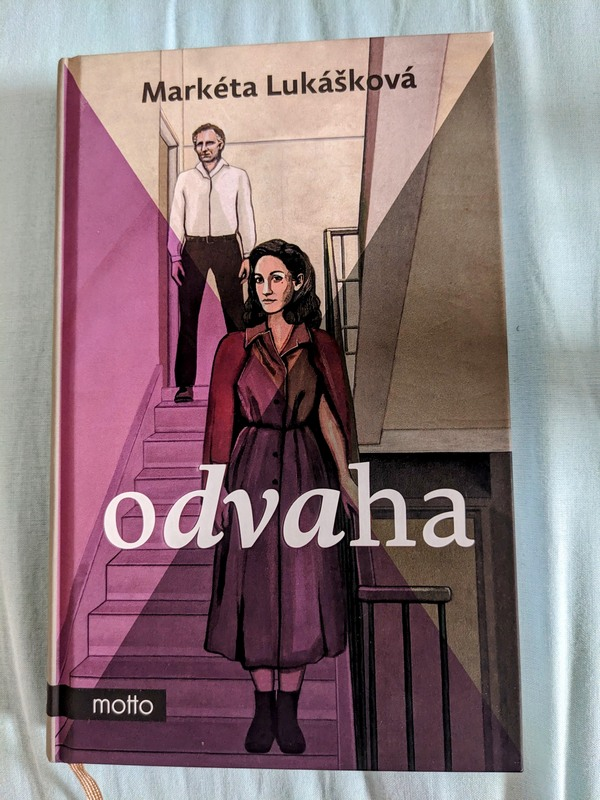

Přestože si myslím, že poloha, která Markétě Lukáškové svědčí nejlépe, je autobiografie ( InTyMně) a vůbec ze všeho nejvíc jí sedí popularizace naší moderní historie ( Co vás v dějáku nenaučili), její nejnovější dílko Odvaha skutečně nešlo v knihkupectvích přehlédnout a pochvalné recenze nalákaly ke čtení nakonec i mě.
Oproti ostatním Markétiným knížkám tento příběh není zasazen do současnosti, nýbrž do poválečných padesátých let. Hlavní hrdince Adě se podařilo přežít peklo koncentračního tábor a žije teď spolu se svou invalidní matkou opět v Praze. U moci už jsou ale komunisté a Ada zjišťuje, že jim její židovský původ vadí úplně stejně, jako předtím nacistům. Nedovolí jí vystudovat medicínu ani žít život, jaký si pro sebe vysnila. Ada zjišťuje, že doba, ve které žije, dívce jejího postavení nenabízí mnoho možností, jak se vymanit soudruhy nalinkovanému osudu. A pokud ano, tak jen za cenu morálních kompromisů - což je základní linie, kolem které se celý příběh odvíjí.
Zda Ada zůstane věrná svým názorům a ideálům se čtenář nedozví, protože kniha předestírá dva alternativní příběhy, kterým předchází nabídka „výhodného“ sňatku. To, zda Ada na tuto nabídku odpoví ANO či NE, pak zcela ovlivní její další životní směřování. Přestože čtenář sleduje Adiny osudy jen po dobu několika málo měsíců, i z toho mála si lze udělat obrázek o životě v té době a vžít se do kůže hlavních postav.
Co mně osobně na knize vadilo byla asi především postava Ady, která ve čtenáři vzbuzuje jistou rozpolcenost. Svůj podíl na tom mají samozřejmě dvě verze příběhu a tím pádem nemožnost prohlédnout, jaká je Ada doopravdy. Mně byla její postava celou dobu spíše nesympatická. I přesto, že nepochybuji o tom, že psaní knihy předcházela autorčina důkladná rešerše o životě v padesátých letech, příběh mi připadal málo uvěřitelný a jednání některých osob (např. Adina kamarádka Anna) na tu dobu vyloženě lehkomyslné. Způsob, kterým se spolu některé postavy bavily, ve mně často evokoval nepřirozenost a křeč.

Na druhou stranu – Odvaha je opravdu čtivá, místy velmi napínavá s téměř až detektivní linií (která bohužel nakonec vyšumí tak trochu do ztracena). Jakmile se do příběhu jednou ponoříte, těžko budete knížku odkládat. Upoutat čtenáře tedy autorka bezesporu umí. Za mne ale Odvaha bohužel stále spadá spíše do kategorie nenáročné „oddechovky“, byť tentokrát se Markéta Lukášková pokusila odvyprávět temnější příběh. Je to kniha, ke které se asi už nemusím znovu vracet. Pokud vás téma láká, za přečtení asi stojí, ale nečekala bych od toho literární událost roku :-)